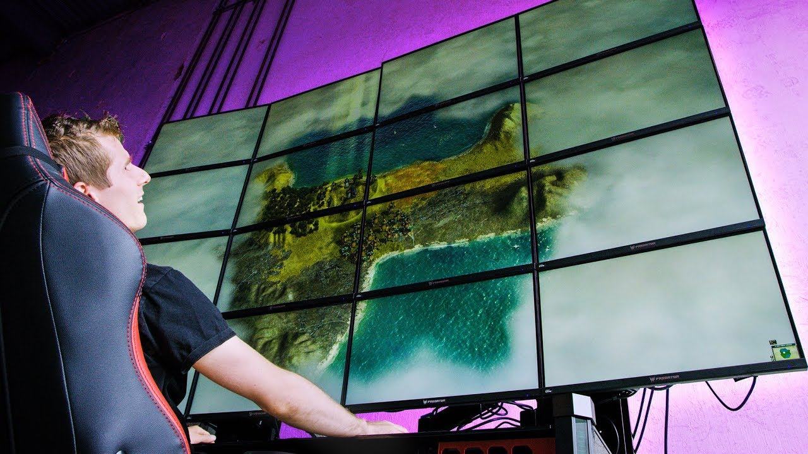

Gaming at 16k?

I have been watching linus tech tips for over 5 years. He really helped my passion for technology and
ICT flourish. By showing all the fun and crazy things you can do with it.
In this video he demonstrates that it is somewhat possible to play games at 16k which is just absolutely
crazy. Having one pc drive 16 4k displays is a very impressive feat and shows how far technology has
come